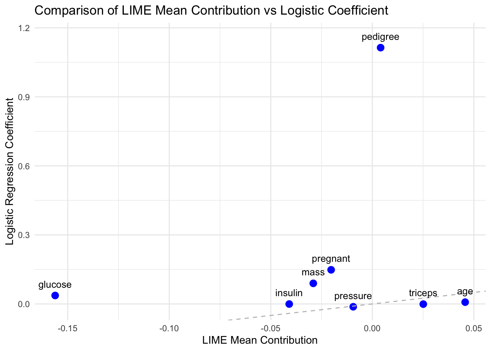
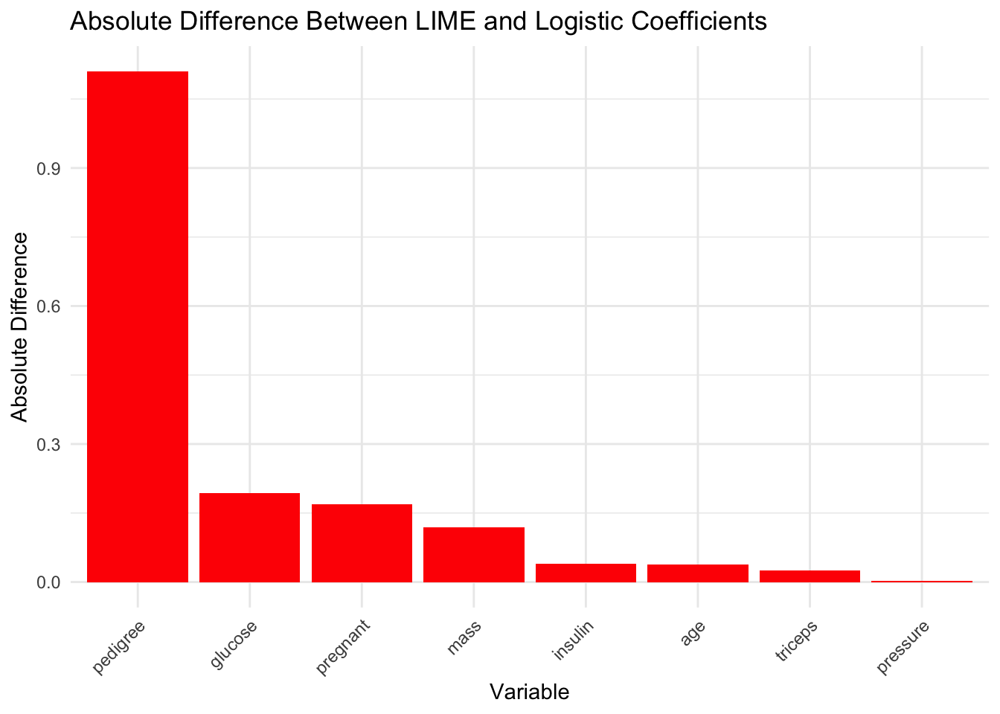
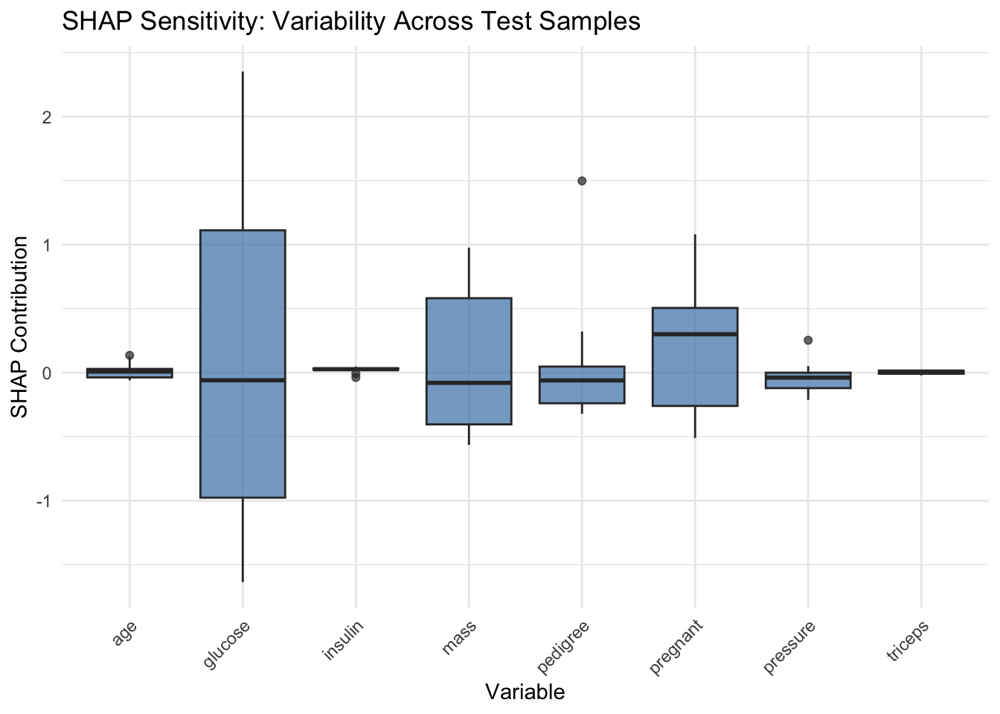

library(ggplot2)ggplot(consistency_df, aes(x = mean_lime, y = logistic_coef, label = variable_clean)) +geom_point(color ="blue", size =3) +geom_abline(slope =1, intercept =0, linetype ="dashed", color ="gray") +geom_text(nudge_y =0.05, size =3.5) +labs(title ="Comparison of LIME Mean Contribution vs Logistic Coefficient",x ="LIME Mean Contribution",y ="Logistic Regression Coefficient") +theme_minimal()

Code
ggplot(consistency_df, aes(x =reorder(variable_clean, -abs_diff), y = abs_diff)) +geom_col(fill ="red") +labs(title ="Absolute Difference Between LIME and Logistic Coefficients",x ="Variable", y ="Absolute Difference") +theme_minimal() +theme(axis.text.x =element_text(angle =45, hjust =1))

4.2 Consistency Analysis - Random Forest
we trained a logistic regression model using the same dataset and compared the model’s coefficients with the mean LIME contributions aggregated across multiple runs. Since LIME is a local explanation method, while logistic regression provides global coefficients, their alignment can indicate whether local interpretability methods reflect global trends.
From the scatter plot of logistic regression coefficients vs LIME mean contributions, features such as age, pressure, and triceps show small absolute differences between the logistic coefficient and LIME average contribution, suggesting good consistency. In contrast, pedigree exhibits a large deviation, indicating that LIME’s local explanations for this variable may not align well with the global behavior captured by the logistic model.
Overall, the analysis suggests that while LIME explanations are partially aligned with global model behavior, they may deviate for variables with complex influence.
4.3 Consistency - Logistic Regression
In the third step, we examined the sensitivity of the model interpretation among different individuals. We used a fixed logistic regression model, applied LIME to 10 test samples and plotted a box plot of feature contributions.
predictor <- iml::Predictor$new(model = logit_model, data = train_data[, -ncol(train_data)], y = train_data$diabetes)sensitivity_shap <-list()for (i in1:10) { shap <- iml::Shapley$new(predictor, x.interest = test_data[i, -ncol(test_data)]) df <- shap$results %>%mutate(case = i) sensitivity_shap[[i]] <- df}shap_df <-bind_rows(sensitivity_shap) %>%rename(variable = feature, contribution = phi)ggplot(shap_df, aes(x = variable, y = contribution)) +geom_boxplot(fill ="steelblue", alpha =0.7) +labs(title ="SHAP Sensitivity: Variability Across Test Samples",x ="Variable", y ="SHAP Contribution") +theme_minimal() +theme(axis.text.x =element_text(angle =45, hjust =1))

4.4 Consistency Analysis - Logistic Regression
LIME chart:
Glucose: The box plot has the largest span (0.1-0.4+), indicating that the interpreted value is sensitive to the changes of the test case.
There are also obvious changes in “mass” and “pregnant”, and the contribution direction will change.
Age, Triceps, Insulin: The box is very narrow and the values are almost fixed, indicating that individual changes have no significant impact on the interpretation.
SHAP Diagram:
Glucose remains the most sensitive variable, with a wider range of variation than LIME (-1 to 1.2).
The contribution of SHAP to most variables (such as age, insulin, triceps) is almost constant.
Compared with LIME, the directions are consistent (such as glucose, mass), but the variation amplitude is greater, showing the characteristic that the local interpretation of SHAP is more sensitive.
LIME and SHAP explanations show a high degree of consistency in identifying the most sensitive and least sensitive features in different test samples. Although SHAP tends to exhibit a large range of variation due to its theoretical design, the overall ranking and directional contribution of features are closely consistent with the LIME results.